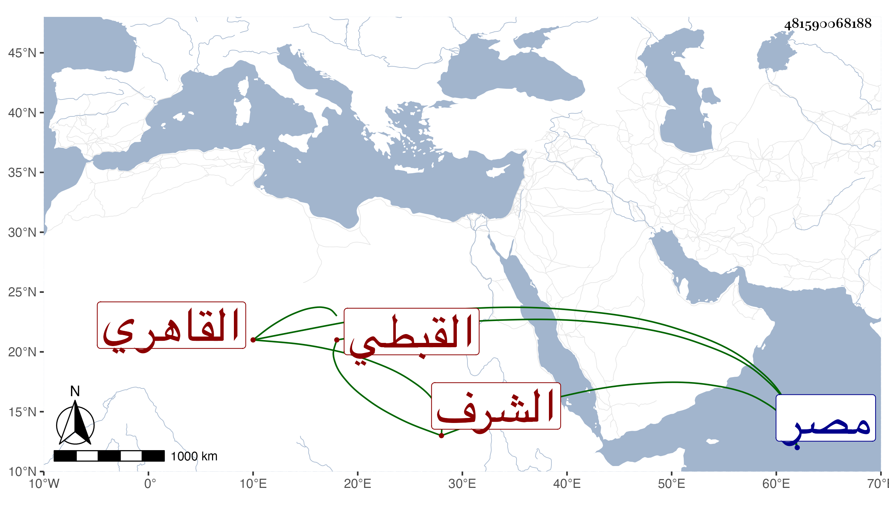

0902Sakhawi.DawLamic.ITO20230111-ara1.EIS1600.481590068188
Biography ID: 481590068188
1061
يحيى الشرف القبطي القاهري ويعرف بابن صنيعة. ممن خدم بالكتابة ثم ترقى بسفارة الحسام بن حريز للوزر عوضا عن العلاء بن الأهناسي في ربيع الآخر سنة ست وستين ولم يلبث أن انفصل عنها في صفر من التي تليها واستقر في أول سنة خمس وسبعين بعد موت البرهان الرقي فيما كان باسمه من توقيع وغيره وباشر التوقيع في خدمة كاتب السرمدة ثم انقطع . مات في العشر الأخير من المحرم سنة اثنتين وثمانين بمصر .
